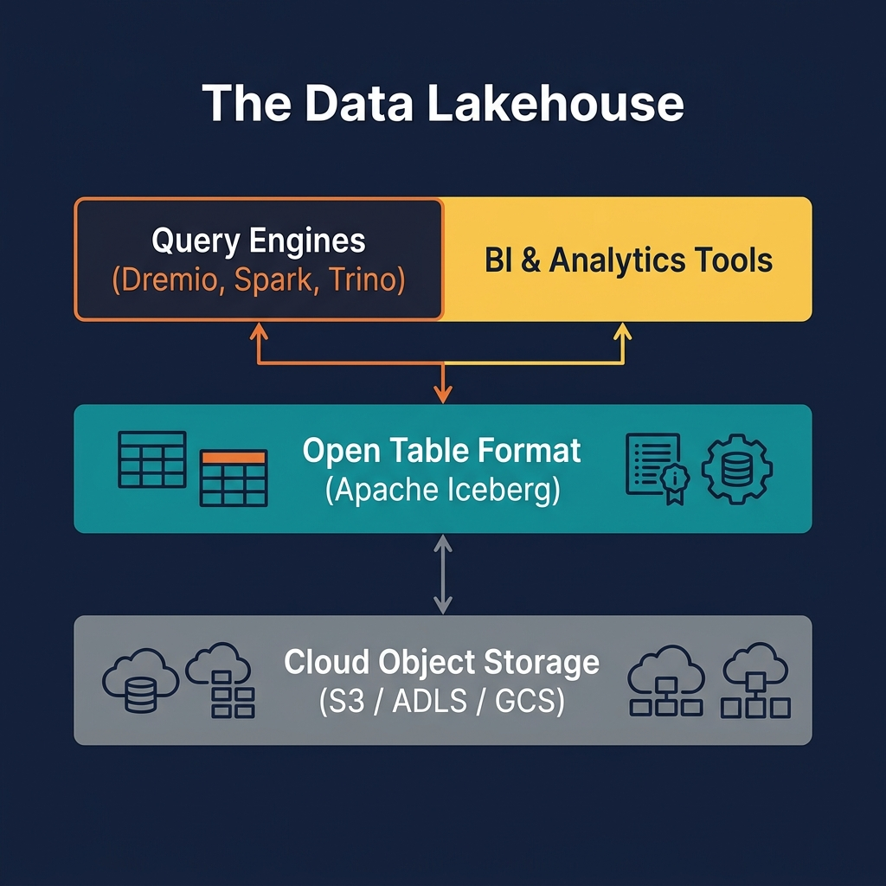
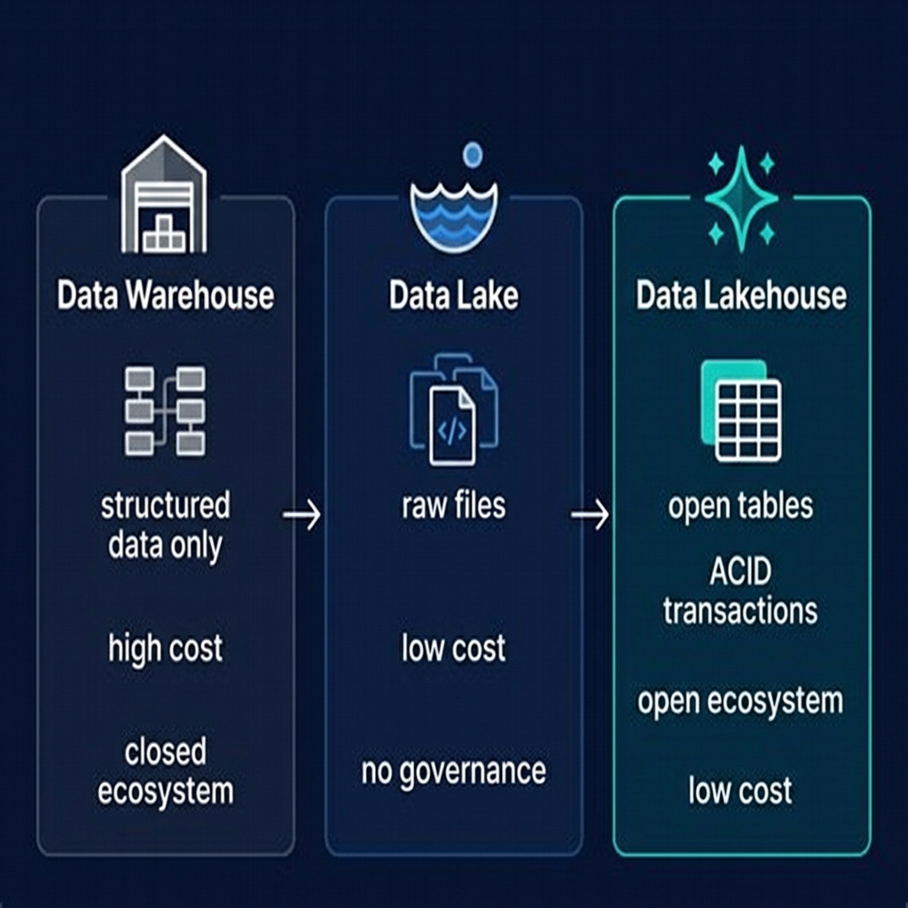

What Is ETL?
ETL — Extract, Transform, Load — is the three-stage data integration process that moves data from source systems into a destination analytical system. It has been the dominant data integration paradigm since the 1970s and remains foundational to modern data engineering, even as the specific tools, targets, and ordering of steps have evolved.
The three stages are sequential and have distinct responsibilities: Extract reads data from one or more source systems — operational databases, SaaS APIs, log files, event streams, third-party data feeds. Transform applies business logic to the extracted data: cleaning null values, resolving entity identities, applying type conversions, joining related records, aggregating time series, and conforming data from multiple sources into a unified schema. Load writes the transformed data into the destination system — historically a data warehouse, and increasingly an Apache Iceberg table in a data lakehouse.
In traditional ETL — particularly in the on-premises data warehouse era — all transformation logic was applied in a staging area (often a separate database or flat files on an ETL server) before data was loaded into the warehouse. This approach kept the transformation logic separate from the destination system and allowed the warehouse to receive only clean, conformed data.
Modern ETL has evolved substantially. The rise of cloud compute, distributed processing frameworks like Apache Spark, and SQL-based transformation tools like dbt have shifted where and how transformation happens. The ELT (Extract, Load, Transform) pattern — loading raw data into the destination first and transforming it there — has displaced traditional ETL for many use cases. Understanding the trade-offs between ETL and ELT is essential for designing modern data pipelines.
The Three Stages in Detail
Each stage of the ETL process has its own complexity, tooling, and failure modes:
Stage 1: Extract
The Extract stage connects to source systems and reads data. This seems simple, but source system diversity makes extraction complex in practice. Common extraction patterns include:
- Full extraction: Read the entire source table on every pipeline run. Simple to implement but expensive for large tables. Appropriate for small reference tables or when incremental extraction is not available.
- Incremental extraction: Read only records modified since the last extraction run, using a high-watermark column (e.g.,
updated_attimestamp). Far more efficient but requires source tables to have reliable change-tracking columns. - Change Data Capture (CDC): Read the database's transaction log (binlog in MySQL, WAL in Postgres) to capture every insert, update, and delete as a stream of change events. The most efficient and complete approach but requires access to the database's replication stream.
Stage 2: Transform
The Transform stage is where business logic is applied. Transformation operations include data type casting, null handling, string normalization, date parsing, deduplication, entity resolution (matching records across systems that represent the same real-world entity), aggregation, and enrichment with reference data lookups. Transformation errors are the most common source of data quality issues in ETL pipelines — a missed null check or incorrect type cast can silently corrupt downstream data.
Stage 3: Load
The Load stage writes transformed data to the destination. In traditional ETL, the load was often a full refresh of the destination table — truncate and reload — or an incremental insert of new records only. Modern lakehouse ETL uses Apache Iceberg's MERGE INTO for upserts, enabling efficient incremental loads that correctly handle updates and deletes from source systems without full table rewrites.

ETL vs. ELT: The Modern Trade-off
The rise of cloud data lakes and lakehouses created the conditions for ELT (Extract, Load, Transform) — a reversal of the traditional ETL ordering where raw data is loaded into the destination first and transformed there using the destination's compute power.
| Dimension | ETL | ELT |
|---|---|---|
| Transform timing | Before load (in staging) | After load (in destination) |
| Raw data preserved? | No (only transformed data is loaded) | Yes (raw data lands in Bronze layer) |
| Compute location | ETL server / dedicated cluster | In the destination (Spark, dbt, Dremio) |
| Reprocessing capability | Difficult (requires re-extracting from source) | Easy (transform Bronze again from raw) |
| Tooling | Informatica, Talend, SSIS | dbt, Spark, Flink, Dremio SQL |
| Latency | Higher (extra staging step) | Lower (load immediately, transform async) |
| Typical destination | Data warehouse | Data lakehouse (Iceberg) |
In the Medallion Architecture, the ELT pattern maps naturally: Extract from source systems, Load raw data into Bronze Iceberg tables, Transform in the destination using Spark or dbt to produce Silver and Gold tables. This approach preserves the complete raw data history in Bronze, enabling reprocessing from scratch if business logic changes.
ETL Tools in the Modern Data Stack
The ETL tooling landscape has evolved dramatically from the monolithic ETL servers of the 2000s. The modern data stack uses a combination of purpose-built tools for each stage:
Ingestion Tools (Extract + Load)
- Airbyte: Open-source connector platform with hundreds of pre-built connectors for SaaS APIs, databases, and files. Loads raw data to cloud storage or directly to Iceberg tables.
- Fivetran: Managed connector service, particularly strong for SaaS-to-warehouse pipelines. Increasingly supports Iceberg as a destination.
- Apache Kafka + Kafka Connect: Streaming ingestion platform with connectors for databases (via CDC) and APIs. The standard for near-real-time extraction.
- AWS Glue / Azure Data Factory / Google Dataflow: Cloud-managed ETL services tightly integrated with their respective cloud ecosystems.
Transformation Tools
- dbt (Data Build Tool): SQL-based transformation framework that defines transformations as SELECT queries, manages dependencies, runs tests, and documents data models. The dominant tool for Silver and Gold layer transformations in modern lakehouses.
- Apache Spark: Python or Scala-based distributed transformation for large-scale or complex data processing that exceeds SQL's expressiveness.
- Apache Flink: Stream-first processing for real-time transformation pipelines from Kafka to Iceberg.
Orchestration
- Apache Airflow: The dominant workflow orchestrator. DAG-based scheduling and monitoring of ETL pipeline stages.
- Prefect / Dagster: Modern orchestrators with better Python-native workflow definitions and observability than Airflow.
ETL Pipeline Patterns for the Lakehouse
Modern lakehouse ETL pipelines follow several common design patterns:
Incremental Snapshot Pattern
The most common production pattern: each pipeline run extracts only records changed since the last run (using a watermark column), appends them to the Bronze Iceberg table, and processes them through Silver and Gold transformations. This pattern minimizes source system load and pipeline runtime.
Full Refresh Pattern
For small, frequently changing reference tables (product catalog, geographic reference data), a full refresh on every run is simpler and more reliable than incremental extraction. The destination table is truncated and reloaded. Iceberg's atomic snapshot model ensures that readers see either the complete old data or the complete new data — never a partial state during the reload.
CDC Streaming Pattern
For operational databases where latency requirements are strict (minutes rather than hours), CDC streaming captures every change event from the database's transaction log and writes it to Bronze in near-real-time. A continuous Silver transformation job (Flink or Spark Structured Streaming) merges these changes into Silver Iceberg tables using MERGE INTO.
Backfill Pattern
When a new data source is onboarded or a transformation logic change requires historical reprocessing, a backfill pipeline processes historical data in bulk. Iceberg's partition pruning and incremental reads make efficient historical backfills practical — you can process each historical partition independently without scanning the entire table.

Data Quality in ETL Pipelines
ETL pipelines are the primary mechanism through which data quality issues propagate — or are caught — in the data platform. A well-designed ETL pipeline implements quality checks at each stage transition:
Extract Quality Checks
Validate that the source system returned an expected record count and that the schema matches the expected structure. If the source truncated data (returned fewer rows than expected) or changed its schema (added or removed columns), the pipeline should fail loudly rather than silently loading bad data.
Transform Quality Checks
After applying transformation logic, validate key invariants: null rates on critical columns below a threshold, no negative values in quantity or price columns, all foreign key values exist in the referenced dimension table. dbt tests are the standard mechanism for these checks in SQL-based transformation pipelines.
Load Quality Checks
After loading to the destination, validate that the row count change is within expected bounds, that the most recent event timestamp is fresh (not stale from a missed extraction), and that no column min/max values are outside historical norms. Tools like Great Expectations, Monte Carlo, and Dremio's built-in profiling capabilities provide automated anomaly detection for these post-load checks.
ETL Security and Compliance
ETL pipelines handle sensitive data by definition — they are the conduits through which production data flows from operational systems into the analytical platform. Several security considerations are critical:
Credential Management
ETL pipelines must authenticate to both source systems (production databases, APIs) and destination systems (object storage, catalogs). Credentials should never be hardcoded in pipeline code. Use secrets management services (AWS Secrets Manager, HashiCorp Vault, Azure Key Vault) to inject credentials at runtime.
Data Masking During Transform
Personally Identifiable Information (PII) should be masked, hashed, or tokenized during the Transform stage before being loaded into the analytical destination. This ensures that downstream consumers — analysts, BI tools, ML engineers — never have access to raw PII, even if they have broad access to Bronze tables.
Audit Logging
Record every ETL pipeline run: what data was extracted, from which source, by which service account, at what time, how many records were processed, and what the final load status was. This audit trail is essential for regulatory compliance (GDPR, CCPA, HIPAA) and for diagnosing data quality incidents after the fact.
GDPR Right-to-Erasure
When a customer exercises their GDPR right to erasure, the ETL pipeline must be extended to propagate the deletion through all three Medallion layers. Iceberg's row-level delete capability makes this efficient — a targeted DELETE statement removes the customer's records from Silver and Gold tables without full partition rewrites. Bronze tables, as the immutable historical record, require a more complex approach (typically replacing the customer's data with null or tokenized values in a new overwrite snapshot).
ETL with dbt in the Data Lakehouse
dbt (Data Build Tool) has become the dominant transformation tool in the modern data stack, and it integrates naturally with the lakehouse Medallion Architecture. dbt defines transformations as SQL SELECT statements organized into a DAG of models — each model is a table or view in the destination system, and dbt manages the dependencies, execution order, and documentation automatically.
In a lakehouse ETL pipeline using dbt:
- An ingestion tool (Airbyte, Kafka Connect) loads raw data into Bronze Iceberg tables
- dbt models define Silver transformations as SQL — joins, filters, type casts, deduplication logic — running against Bronze Iceberg tables
- dbt Gold models define aggregations and dimensional models running against Silver tables
- dbt tests validate data quality at each layer transition
- dbt documentation auto-generates a data catalog with lineage graphs for every model
dbt supports Iceberg natively through adapters for Apache Spark, Trino, and Dremio. Dremio's dbt adapter allows dbt models to run against Dremio's query engine, creating Iceberg tables in Dremio's catalog and leveraging Reflections for acceleration of dbt-defined Gold models.
Common ETL Pitfalls and How to Avoid Them
ETL pipelines are among the most common sources of production incidents in data platforms. These are the most frequent failure patterns and their mitigations:
Silent Data Loss
An extraction query that is missing a filter or has an incorrect date range can silently under-extract data. The pipeline succeeds with a smaller-than-expected record count, and the missing data is only discovered when analysts report incorrect dashboard totals. Mitigation: implement explicit record count validation comparing extracted count to source system count.
Schema Drift
A source system adds, removes, or renames a column without notifying the data team. The ETL pipeline fails (if the column is required) or silently drops the column (if it was optional). Mitigation: use schema evolution-aware tools (Iceberg's schema evolution, dbt's --fail-fast mode) and implement schema change alerts.
Pipeline Coupling
Building a single monolithic ETL job that extracts from 20 sources, applies 50 transformations, and loads to 15 destinations. When any step fails, the entire pipeline fails and must be debugged as a unit. Mitigation: decompose into small, independently scheduled and monitored pipeline stages.
Timezone Inconsistency
Source systems in different timezones produce timestamps that are inconsistent when joined. A sales order recorded at '2026-01-01 23:00:00 PST' and a payment recorded at '2026-01-02 07:00:00 UTC' represent the same transaction but appear to be from different days. Mitigation: normalize all timestamps to UTC during the Transform stage.
Summary
ETL — Extract, Transform, Load — is the backbone of every data platform. From mainframe batch jobs of the 1970s to modern streaming Flink pipelines loading Apache Iceberg tables, the fundamental pattern remains constant: extract data from where it lives, transform it into a useful form, and load it into a destination where it can be analyzed.
In the modern data lakehouse, ETL has evolved in three important ways: the dominant ordering has shifted to ELT (load raw first, transform in the destination); the dominant tooling has shifted to dbt for SQL transformations and Apache Spark/Flink for complex processing; and the dominant destination has shifted from proprietary data warehouse storage to open Apache Iceberg tables in cloud object storage.
The Medallion Architecture provides the organizational framework for modern lakehouse ETL — Bronze captures the raw extraction, Silver applies the transformation, and Gold delivers the analytical output. Tools like Dremio serve the Gold layer with sub-second performance through Reflections, completing the pipeline from raw source data to business-ready analytics.